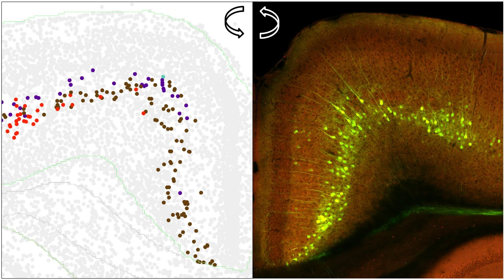
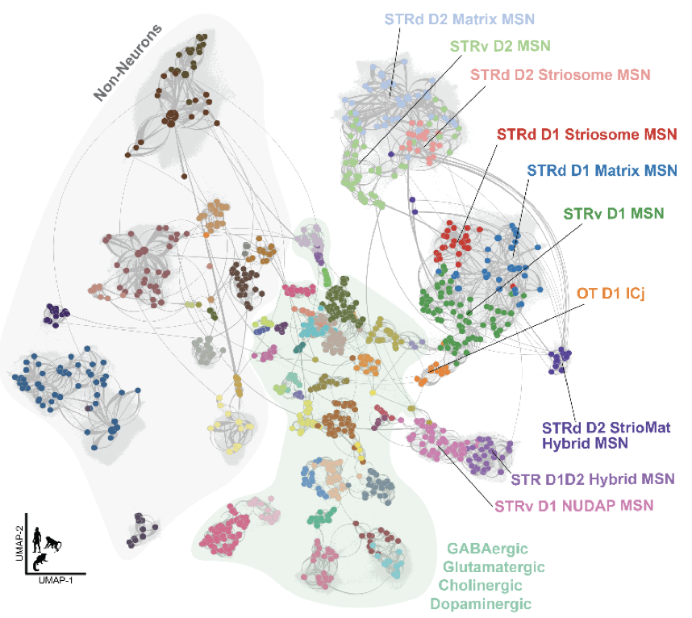
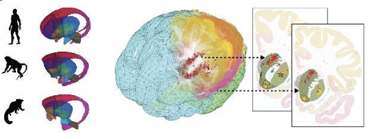
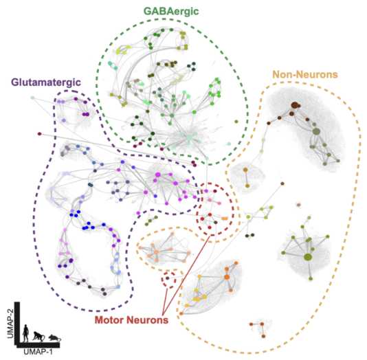
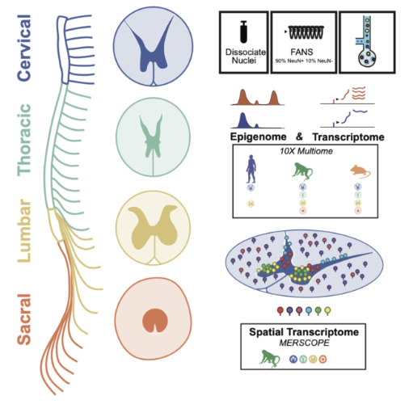
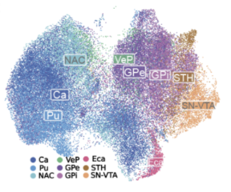
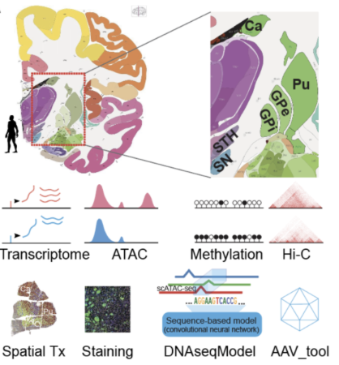
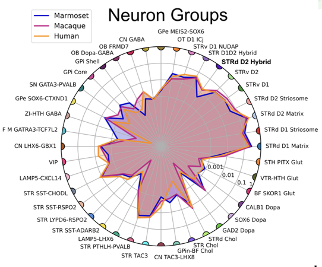
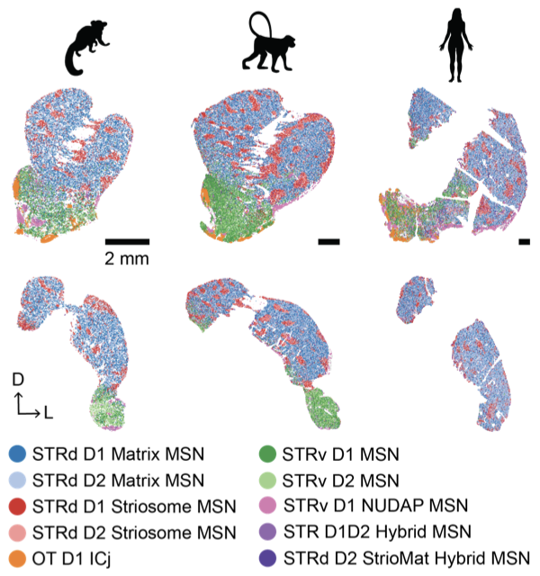

|
Inkar Kapen I'm a bioinformatics analyst at Allen Institute in Seattle, where I apply machine learning models to segment cells in brain tissue images, classify cell types, and predict anatomical brain regions from sequencing data. Email / CV / Google Scholar / ResearchGate / Github |
{kind=link}
ResearchI'm interested in multimodal representation learning and interpretable machine learning. |
Challenges and Hackathons / Publications / Tutorials
Challenges and Hackathons |
|


|
MapMySections – Data Challenge
Nelson J. Johansen, Yuanyuan Fu, ..., Inkar Kapen, ..., Trygve E. Bakken. Submitted to Cell, 2025 arXiv A multiomic consensus atlas of 1.8 million nuclei from human, macaque, and marmoset spanning eight BG structures. The atlas integrates cross-species gene expression, open chromatin, and spatial profiling enabling the definition of conserved and divergent cell types. |
Publications |
|


|
Cross-species Consensus Atlas of the Primate Basal Ganglia
Nelson J. Johansen, Yuanyuan Fu, ..., Inkar Kapen, ..., Trygve E. Bakken. Submitted to Cell, 2025 arXiv A multiomic consensus atlas of 1.8 million nuclei from human, macaque, and marmoset spanning eight BG structures. The atlas integrates cross-species gene expression, open chromatin, and spatial profiling enabling the definition of conserved and divergent cell types. |
|


|
Human, Macaque, and Mouse Consensus Cell Type Atlas of the Spinal Cord
Matthew T. Schmitz*, Nelson J. Johansen*, Niklas Kempynck*, Inkar Kapen, ..., Trygve E. Bakken. Submitted to Neuron, 2025 arXiv link will be added soon A unified, cross-species cell type atlas based on the integration of single-nucleus gene expression, chromatin accessibility, and spatial transcriptomic data from cervical, thoracic, lumbar, and sacral levels, including motor neurons sampled across the entire rostro-caudal axis of the macaque spinal cord. |
|


|
Circuit specific specialization of human basal ganglia astrocytes
Yuanyuan Fu, Nelson J. Johansen, ..., Inkar Kapen, ..., Trygve E. Bakken. Submitted to Cell, 2025 arXiv A multimodal atlas built by integrating single-nucleus RNA-sequencing and chromatin accessibility with DNA methylation, 3D chromatin conformation, and spatial transcriptomics, then mapped basal ganglia programs onto a whole-brain reference. |
|


|
A cross-species spatial transcriptomic atlas of the human and non-human primate basal ganglia
Madeleine N. Hewitt, Meghan A. Turner, ..., Inkar Kapen, ..., Stephanie C. Seeman. Submitted to Cell, 2025 arXiv A cellular-resolution, spatial transcriptomic atlas of the basal ganglia in human, rhesus macaque, and common marmoset, sampling over one million cells in each species. The atlas integrates spatial data with a cross-species, consensus snRNA-seq cell type taxonomy, revealing conserved principles of molecular organization within and across structures. |
Tutorials |
|
Template: source code. |